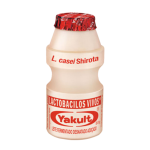

Yakult é uma marca de leite fermentado probiótico, produzido a partir da fermentação do leite com uma cepa específica de bactérias benéficas para a saúde intestinal. É conhecido por seu tamanho pequeno e formato de garrafinha.
As crianças adoram beber Yakult como um lanche saudável e saboroso, enquanto também se beneficiam dos probióticos para a saúde do intestino.